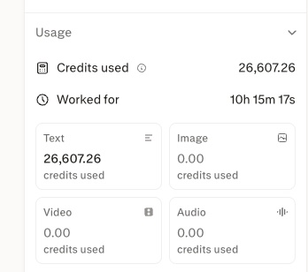

[00] 送 Une offre, pas un devis
La refonte de tousimparfaits.com que vous venez de parcourir, les soixante pistes de logo à côté, la traduction en neuf langues : c'est offert. Pas de licence, pas de facture, pas de contrepartie. Vous prenez, vous jetez, vous découpez en thème Shopify — c'est le vôtre.
Ce qui suit explique qui je suis, pourquoi je l'ai fait, et ce que je peux faire ensuite si l'envie vous prend d'aller plus loin. La partie prix est courte et sans détour.
[01] 私 Qui je suis
J'ai fait mes armes en ingénierie sociale — le facteur humain, celui qui casse avant les pare-feux — au service du renseignement. C'est un métier où on apprend deux choses : comment les gens décident vraiment, et comment un système entier tient sur trois personnes et deux mots de passe.
Aujourd'hui je suis entrepreneur Internet, installé entre New York et Lisbonne, et consultant sur deux sujets : cybersécurité et IA appliquée. Je construis mes propres produits — un opérateur eSIM, une app de news — et j'interviens sur ceux des autres quand le sujet me plaît.
Concrètement, ce que je sais faire de mes mains : des sites et des apps qui convertissent, des agents IA qui font vraiment le travail au lieu d'en parler, des bases de données et des workflows d'équipe qui tiennent la charge, des audits qui trouvent ce qui va casser avant que ça casse.
Et surtout, il y a le hors-champ. Avec mes équipes chez megastack.sh et chez calliope.agency, on a fini, à force, par développer nos propres modèles dédiés au branding, au web design et au développement d'applications web. Pas des prompts recyclés : des modèles entraînés et outillés pour ça, d'une efficacité assez folle. Ils tournent déjà sur mes propres boîtes — Openline, cupof.news — et sur les projets de nos clients.
C'est exactement ce que vous avez sous les yeux : environ cinq cents dollars d’usage réel et quatre à cinq heures de mon temps — un dimanche, en multitâche avec mes autres projets, pendant qu’une dizaine d’heures d’agents tournaient en fond — et voilà le niveau de qualité que ça sort. Et là je ne vous parle que de design et de front — je ne vous parle pas encore du reste, le développement lourd, les infrastructures, les automatisations et les workflows.
Alors je me suis dit : tiens, je vais proposer de donner un coup de pouce à Tev et à l'équipe.
→ paulfleury.com · linkedin.com/in/paulfxyz · hello@paulfleury.com
[02] 不完全 Pourquoi vous
Au printemps 2020, en l'espace de trois mois, j'ai perdu mon mentor professionnel, mon père biologique, ma copine de l'époque — et le monde s'est arrêté par-dessus. J'ai démissionné du système. Pas métaphoriquement : j'ai arrêté, et je suis resté sur Internet.
C'est là que je suis tombé sur Tev. Puis, surtout, sur ce qui s'est construit autour : les équipes successives, les gens qui arrivent, les gens qui partent, les formats qui se cherchent, la boîte qui grossit sans jamais perdre le ton. Jusqu'à la pieuvre entière d'aujourd'hui — Odyssée comprise, l'esport, la bouffe, le merch, tout.
Je ne dis pas ça pour faire joli avant de parler tarif. Je le dis parce que c'est la seule raison pour laquelle cette refonte existe : personne ne me l'a demandée, personne ne la paie. J'ai regardé la vidéo où vous dites qu'il faut recommencer Tous Imparfaits, que le branding ne suit pas, qu'aucun logo ne fonctionne sur toute la gamme. Et j'ai fait ce que je sais faire, un dimanche, plutôt que de laisser un commentaire.
C'est aussi mon test d'entrée. Vous jugez le travail avant de me parler — pas un portfolio, pas un appel de découverte, pas un deck. La chose est en ligne, vous cliquez, vous voyez.
[03] 送 Ce qui est déjà offert
Ce qui existe aujourd'hui, en ligne, utilisable en l'état ou en pièces détachées. C'est une démonstration statique, assumée comme telle — le périmètre exact est détaillé juste en dessous.
Une page unique, statique, orientée conversion : hero, offres à paliers, 7 collections, 8 produits, univers épinglé, shop-the-look, Pack Mystère, collaborations, communauté, FAQ, newsletter. Panier et tunnel simulés côté client.
Trente pour « Tous Imparfaits », trente pour « Imparfaits », chacune livrée en logo complet, favicon de 16 à 48 px, app icon sur trois fonds et onglet de navigateur. Avec l'arbitrage écrit : IM / PARFAITS.
Français, anglais, japonais, chinois, coréen, espagnol, allemand, néerlandais, italien. Bascule instantanée sans rechargement, y compris sur le panier et le tunnel. Détection de la langue du navigateur au premier passage.
La livraison est bloquée à la France, et c'est légitime : on ne touche ni aux euros ni au périmètre annoncé. Mais on découvre, on suit et on partage une marque bien avant de pouvoir commander chez elle. Vous verrez au fil des opérations s'il y a de quoi élargir — le jour où, l'interface n'aura rien à rattraper.
Aucun jugement sur le site actuel : il tourne, il vend, il a sa personnalité, et il y a du vrai travail derrière — ce n'est pas une refonte-sanction. Je trouve simplement que mon dispositif d'agents de design IA sort des choses sympas : un style très ciblé et des fonctionnalités réellement utiles, qui ajoutent de la valeur à une présence web sans rien casser de ce qui marche déjà — à vous de juger si ça vous parle.
Autant être net tout de suite : ce que vous avez sous les yeux est une vitrine statique, faite pour montrer le potentiel du parcours en un après-midi de travail — pas un site de production. Rien n'est connecté à un vrai stock, à un vrai paiement, à une vraie commande.
Simulé côté navigateur : le panier vit en mémoire, aucune transaction n'est possible.
Toutes ces vues se déclinent dans le même système : la grille, la typographie et les composants existent déjà.
La suite est un escalier de quatre marches, détaillé au bloc suivant : découper en thème Shopify, puis entourer Shopify, puis en sortir — paiement Stripe en direct, base NoSQL sécurisée, API propre et serveur MCP pour brancher stocks et contenu sur Notion, Airtable, ClickUp ou vos agents. Et au-delà, une infra maison : n8n, Ollama, modèles et workflows auto-hébergés. Marche 3 vivement conseillée

Pour information, et pas pour facturation. Voilà ce que cette refonte a coûté : 26 607 crédits et 10 h 15 de travail machine. Chez mon fournisseur privé de modèles frontier, les mille crédits se négocient entre 15 et 18 $ — ce qui met l'ensemble aux alentours de 500 $.
À côté de ça, quatre à cinq heures de mon temps, un dimanche, en multitâche avec mes autres projets. C'est le rapport habituel, et c'est tout l'intérêt de la chose : mes heures pilotent, les siennes produisent.
Notez les trois zéros du relevé : 0,00 en image, en vidéo et en audio. Rien n'a été généré. Toutes les photographies de ces pages sont les vôtres, prises sur votre site — une refonte se juge sur les vrais visuels de la marque, pas sur des rendus flatteurs qui n'existeront jamais en vrai.
Facturé à Ici Japon Corp : 0 €. Je le note parce que ça donne l'échelle réelle du truc — et parce que la suite s'appuie dessus.
Les trois livrables, le code complet, les neuf dictionnaires de traduction et le manifeste qui trace la provenance de chaque asset. Licence MIT : clonez, découpez, revendez, aucune permission à demander. Aucune dépendance, aucune étape de build — un serveur statique et c'est en ligne.
Pas envie de passer par git ? Téléchargez l'archive du site — les trois pages, les polices, les images et les neuf dictionnaires, prêts à ouvrir en local.
Les photographies produit et le logo restent votre propriété — ils sont là pour démontrer la refonte sur vos vrais contenus, et je les retire sur simple demande.
[04] 技 Ce que je peux faire ensuite
Par ordre croissant d'engagement. Vous piochez ce qui vous sert, dans l'ordre que vous voulez.
[05] 貨 Comment je me rémunère
Aucune n'est un forfait imposé. On mélange selon ce que vous voulez obtenir, ce que je pense pouvoir réellement changer, et le niveau d'implication qu'on choisit ensemble.
Je facture l’usage constaté de mes modèles, multiplié par un coefficient de 1 à 5 selon la complexité du travail engagé et le niveau de mise au point requis.
Mon temps de cerveau et de mains, séparé de la machine. Facturé depuis l'Union européenne ou depuis les États-Unis, selon ce qui vous arrange comptablement — TVA intracommunautaire ou facture hors UE.
Pour une implication qui dépasse la prestation. Un fixe mensuel à trois fois le SMIC brut — soit environ 5 600 € par mois sur la base du SMIC au 1er juin 2026 (1 867,02 € brut) — plus des actions ou un intéressement dans les projets sur lesquels j'ai un impact mesurable.
Concrètement, voilà à quoi ça ressemble : je travaille sans deadline, tranquillement, en temps très partiel — mais régulièrement, et sur tous les détails et tous les projets que vous voulez. Pas de sprint, pas de rétro-planning tendu, pas de facture qui gonfle : un flux continu qui avance chaque semaine. C'est ce qui rend le rapport prix / qualité / délai aussi efficace — mes modèles absorbent le volume, et moi je n'ai à arbitrer que le goût et les priorités.
Que ce soit clair : sans deadline et à temps partiel ne veut pas dire à petit impact. C'est même l'inverse. Le temps que je ne passe pas à tenir un planning, je le passe sur le fond — et sur toutes les entités que je peux toucher, la boutique, la marque, les chaînes, l'esport, les outils internes, ce qui n'existe pas encore. Améliorer ce qui tourne, refonder ce qui ne tient plus, innover là où personne n'a eu le temps de regarder. Et sans limite de sujet : web, design, infrastructure, données, IA, automatisation, sécurité — s'il y a de la technologie derrière, je sais m'en occuper, et un an de ce régime change une boîte beaucoup plus qu'un trimestre de sprints.
Et sur ce mode-là, on la joue réglo sur le reste. Les tokens repassent à 1× — le coût constaté, remboursé au centime, sans coefficient de complexité : le fixe est déjà là pour ça. Avec un plancher et un budget définis ensemble, pour que personne ne découvre le montant en fin de mois. Et mes tarifs horaires ne bougent pas non plus : toujours 50 € l’heure ou 500 € la journée, et uniquement si le temps libre que je vous consacre pour ce triple SMIC exige vraiment un bonus exceptionnel. Franchement, ça devrait rester rare.
C’est un fonctionnement de CDI, mais facturable à l’étranger : vous avez la régularité et la disponibilité d’un salarié à temps partiel sans le contrat, et je garde ma liberté d’organisation. Dans ces conditions, et avec le remboursement des modèles à 1×, je pense sincèrement pouvoir avoir un impact substantiel sur toutes les entités de la pieuvre plutôt que sur un site à la fois.
Vous me payez en visibilité : des sponsorings offerts sur vos contenus pour mes sociétés B2C et celles de mes boys. Rien à sortir de la trésorerie, et de mon côté un canal d'acquisition qui vaut largement une facture.
Et surtout — ça se panache
Personne ne choisit une option et s’y enferme. Selon le projet, le mois, ou l’année, le mélange bouge : un peu de cash direct ici, de l’intéressement là, des sponsorings quand ça tombe bien, et le remboursement des modèles qui court en fond. Ça se rediscute quand vous voulez, sans renégocier quoi que ce soit.
NB 1 — Openline face à Ubigi, autant le dire tout de suite. Je sais parfaitement qui sponsorise déjà chez vous. Mon argument est simple : nous sommes moins chers, et nous basculons entre plusieurs MVNO et opérateurs par pays, là où Ubigi est la marque grand public d'un seul opérateur virtuel — Transatel, filiale du groupe NTT (Transatel). Sur le papier comme sur le terrain, ça se voit. Si l'exclusivité ne les dérange pas, on y va ; si elle les dérange, on parle de cupof.news et on n'en fait pas un sujet.
NB 2 — la discrétion fait partie du deal. Si l'envie vous prend de bosser avec moi et d'en parler, un mot d'avance : je ne cherche pas à devenir influenceur, et je ne veux pas apparaître à l'écran. Je travaille pour des gouvernements, de grands groupes et des personnes politiquement exposées — dans ce métier, la visibilité personnelle est un risque, pas une récompense. Me citer par mon prénom, Paul, ou par mon surnom, Polo, ne me pose aucun problème. Au-delà de ça, non : pas de visage, pas de nom complet, pas de portrait, pas de plateau. À part mes marques — Openline et cupof.news — rien sur moi en particulier. Et pour la même raison, ce que je vous donne ici n'est pas à présenter comme une offre de consulting pour PME ou pour créateurs : ce n'est ni mon marché ni mon fonds de commerce. C'est un coup de main à Tev et à l'univers autour — Odyssée, l'esport, la bouffe, le merch — et à personne d'autre. Désolé d'être aussi cadrant là-dessus : c'est le seul point où je ne peux pas être souple.
NB 3 — cupof.news arrive en octobre. Je le peaufine en ce moment. L'idée n'a rien de révolutionnaire et c'est exprès : une app de news simple et efficace, dix histoires par matin, sans fil algorithmique. Le modèle est freemium — gratuit pour l'essentiel, et vraiment pas cher pour la sélection personnalisée. Utile pour tout le monde, y compris pour une audience qui suit le Japon de loin.
[06] 旅 La note amicale
Tout ça se règle très bien par e-mail — ou par messagerie, WhatsApp, Telegram, Signal, Discord, ce que vous utilisez déjà — et ça peut rester comme ça aussi longtemps que vous voulez — je n'ai rien à vous imposer. Simplement, si la collaboration se concrétise et devient un peu régulière, j'aime bien mettre des visages sur les échanges, et plutôt rapidement. Une journée tranquille avec Tev et qui vous voulez, plutôt qu'un appel de trente minutes.
New York ou Lisbonne, comme vous préférez et quand vos dates s'y prêtent — je fais l'aller-retour entre les deux toute l'année : environ un tiers du temps à New York, deux tiers à Lisbonne. Dites-moi ce qui vous arrange, m'aligner ne me coûte rien.
À Lisbonne, mon logement est plus grand qu'à New York, donc je peux vous héberger à deux ou trois sans problème. Et vous montrer deux ou trois endroits que vous avez ratés dans votre vidéo avec Massa. Sans rancune, mais quand même.
Et si c'est plus simple pour vous, je viens au Japon, avec grand plaisir : dans ce cas je facture juste le déplacement, au réel, sans marge. Vous m'hébergez sur place, au village, dans une chambre discrète, et on rembourse le reste au classique — les Uber ou l'équivalent, et les repas. Rien d'autre à prévoir.
Comptez 72 heures à cinq jours maximum. Pas moins, parce que deux nuits — 72 heures de bout en bout — c'est le minimum utile : le temps d'absorber le décalage horaire et d'avoir de vraies journées pleines, plutôt qu'un aller-retour à moitié endormi. J'ai déjà fait des Lisbonne–New York pour 24 ou 48 heures sur place, et j'en garde de très mauvais souvenirs — on ne décide rien de bon dans cet état. Et pas plus, parce que je ne peux pas me libérer davantage — c'est une contrainte de calendrier, pas de motivation.
Rien de tout ça n'est un préalable. Un e-mail suffit pour commencer, même si c'est pour dire « on prend le template, merci, et on s'arrête là ». Ça me va parfaitement, c'était le principe.
Personne n'est parfait. C'est écrit sur vos vêtements depuis 2021, et c'est exactement pour ça que ce travail était facile à commencer.